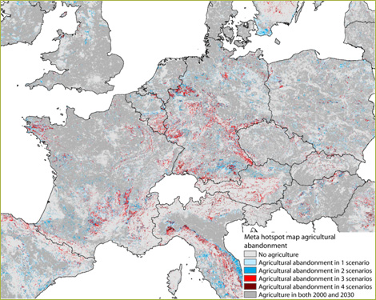
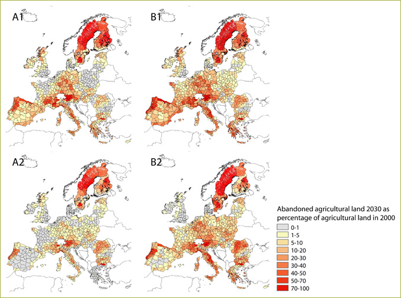

Highlights

Figure 1- Meta hotspots map for agricultural abandonment
for the 4 baseline scenarios
Although the amount of agricultural abandonment is coarsely comparable in the scenarios Global Economy, Regional Communities and Global Cooperation, the spatial patterns shows significant differences. This is due to different spatial policies for these scenarios and different comparative advantages of agricultural production. In the Global Economy scenario agriculture is preferentially concentrated in the highly productive areas while the Regional Communities scenario favours regional production and protection of cultural-historic landscapes.
Hotspots of abandonment
Figure 1 depicts the four baseline scenarios that project agricultural abandonment
in a certain location. Blue areas are only facing abandonment in one or two
of the scenarios while red areas show abandonment in three or all four scenarios.
The regional differences show that some regions are almost certain to face large scale abandonment (red in the map), regardless of the scenario or chosen policy options. The same holds for regions that will never face agricultural abandonment (dark grey in the map). Whatever policy measures taken, they will hardly have an impact on the continuation of farming in these regions.
Some regions only face land abandonment in some of the scenarios – these regions could be abandoned by agricultural activities but could stay in agriculture as well depending on policies and development of demography, global trade etc. In these regions policy may influence the future of farming. Nonetheless the total area of agriculture needed is more or less fixed. So preventing abandonment in one region most likely leads to abandonment elsewhere.
Since the four baseline scenarios represent a broad scope of possible future developments the meta-hotspot map can be read as an indication of the likelihood that a location will show land abandonment. This map can for example be used to focus detailed studies and policies on land abandonment towards areas with high likelihood of agricultural abandonment.
In the red areas policies are likely to not have any effect on prevention of land-abandonment on the longer term. Circumstances for production are unfavourable to maintain agriculture there. In these areas the message to policy makers could be not to invest money in maintaining agriculture but to look for other rural development options. In the blue areas policy might be able to make a change. The blue areas appear to be the areas where policy measures should be targeted at.
Table 1: Total agricultural land in 2000 and 2030 and the area abandoned lands as percentage of the total land are in Europe
| % | Global Economy | Continental Market | Global Cooperation | Regional Communities |
| agriculture 2000 as % of all land | 47.9 | 47.9 | 47.9 | 47.9 |
| agriculture 2030 as % of all land | 43.6 | 47.0 | 41.9 | 42.8 |
| agricultural area change as % of agricultural land | -9.0 | -1.9 | -12.6 | -10.7 |
| agricultural area change as % of all land | -4.3 | -0.9 | -6.0 | -5.1 |
| abandoned areas 2030 as % of all land | 4.4 | 2.2 | 6.7 | 5.9 |
The difference in agricultural area between 2000 and in 2030 is not equal to the area of abandoned land for two reasons. The abandoned areas are all areas that were under agriculture in 2000 and that are "left behind". Conversions from agriculture to built area are not counted as abandonment. Another reason is that agriculture may have shifted to other areas. This increases the area abandoned land, but does not necessarily decreases the area of abandoned land since it may be patches of natural vegetation that are converted for new agricultural land. Especially in Eastern Europe such changes in the location of agricultural areas are found. In a number of scenarios the agricultural area tends to increase in the period 2000-2010 due to the benefits of joining the European Union and CAP support. This leads to the conversion of patches of natural vegetation in the most productive areas. After 2010 these countries also face abandonment of farmland. Abandoned farmlands are mostly the most marginal locations.
Spatial patterns
The aggregated results in Table 1 do not give any information about the distribution
between countries and the spatial pattern within countries. These distributions
and patterns can be quite different between the A1, B1 and B2 scenarios, especially
because they include different sets of spatial policies.

Figure 2- Land use abandonment in 2030 as percentage
of agricultural land in 2000 for the reference scenarios.
The maps in Figure 2 indicate that:
Main driving forces
The main driving forces of land abandonment include:
Policy impacts
LFA Policy will only shift the pattern of land abandonment. The total amount
of agricultural area is constant between the three LFA policy options in the
current Eururalis framework. With LFA policy implemented more agriculture remains
in place in mountainous areas. Spatial policies that focus on supporting farmers
like LFA, can reduce loss of agriculture in marginal areas but only partially.
Some areas are simply too adverse to produce in an economically viable way,
even with subsidies.
Bio-energy policy leads to an extra demand for crop land. This will reduce
the amount of agricultural abandoned land. For instance for the Global Economy
scenario we see that due to the biofuels policy extra land will stay in production.
Without a bioenergy policy the amount of agricultural land would have decreased
by 12%. With the bioenergy policy the decrease of agricultural land is limited
to 4%. The policy on bio-energy has therefore significant impacts on agricultural
land-use. Again spatial patters differ throughout Europe.
CAP support in general leads to less agricultural abandonment.